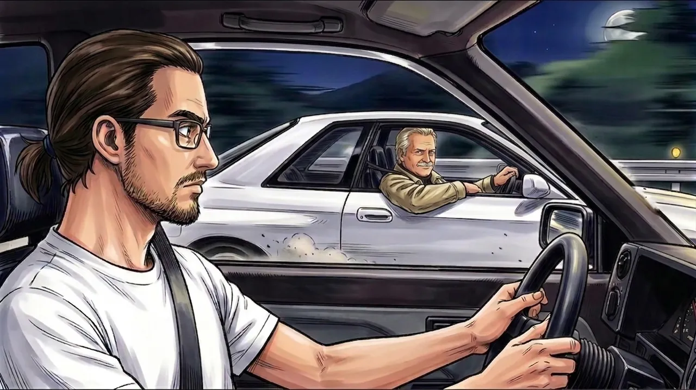
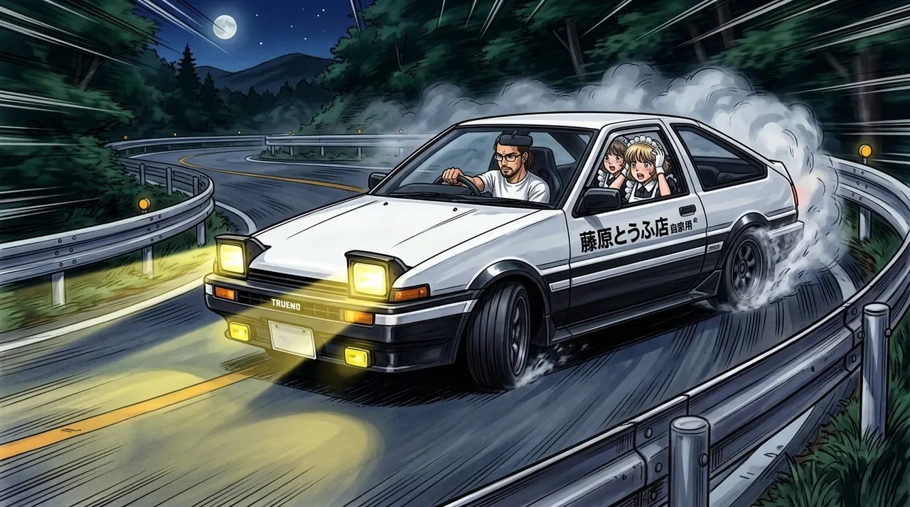
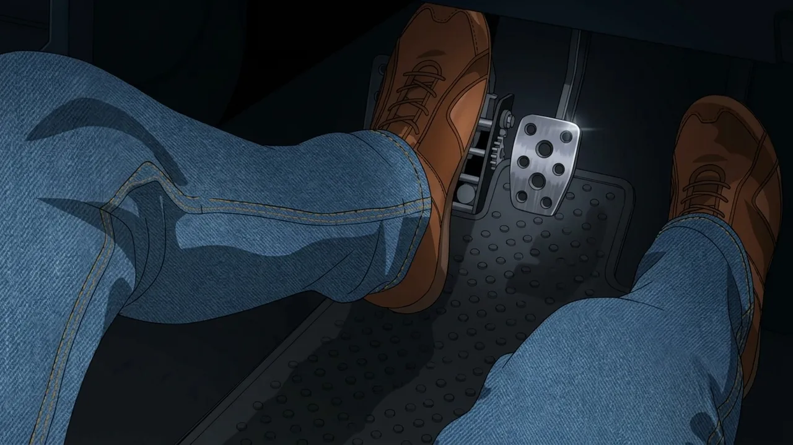
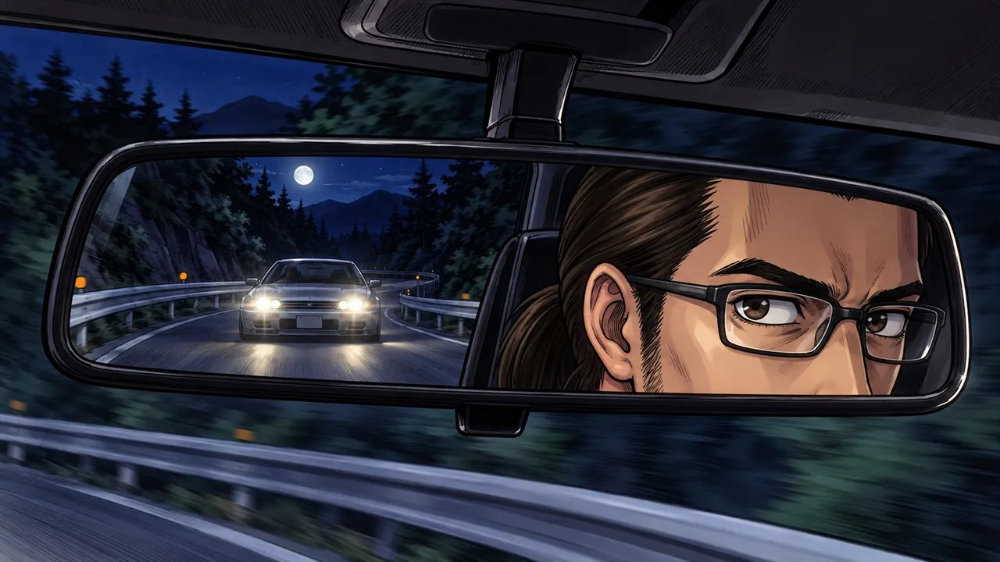
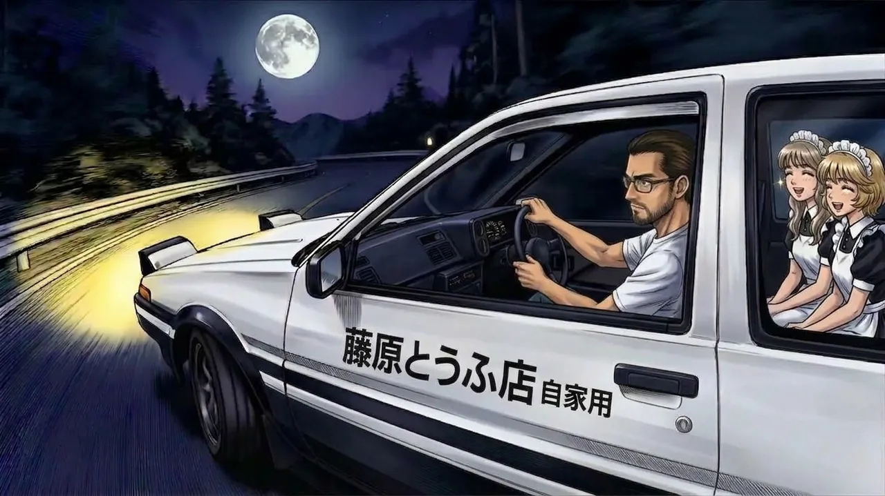

Sofiane
Sofiane est un camarade discret de la bande de Jessy et Ilona. Il surgit souvent sans qu’on l’ait vu arriver, prononce une phrase sibylline beaucoup trop sérieuse pour la situation, puis repart avant que quiconque sache quoi répondre.
Description
Section intitulée « Description »Sofiane parle peu et semble toujours déjà présent quand les autres le remarquent. Ses répliques tiennent de la maxime : courtes, solennelles, souvent incompréhensibles sur le moment.
Derrière la pose, il est très pratique : au festival, il organise en secret tout le planning de rangement du café de la classe. Ses images reviennent sans cesse à la route : routes de montagne, virages en épingle, freinage.
Il a un travail qu’il refuse de nommer, « le service », « celui qui nourrit la route ». Dans la scène bonus du maid café, Jessy et Ilona découvrent qu’il y travaille comme serveur en tenue de maid.
Il a le permis depuis six mois sans l’avoir dit, et son cousin, parti à l’armée, lui confie sa voiture : une AE86 « comme dans Initial D ».
Caractéristiques
Section intitulée « Caractéristiques »- Couleur de dialogue : gris clair (
#d6d6d6). - Signe distinctif : des lunettes.
- Travail : serveur dans un maid café, « depuis trois mois » en décembre ; « Le salaire finance l’essence. La route a faim. » Seuls Jessy et Ilona l’apprennent, et seulement si la scène bonus du maid café est jouée.
- Permis de conduire : obtenu six mois avant l’annonce, sans en parler, « Parce que les gens posent des questions quand on a une voiture. »
- Voiture : l’AE86 de son cousin, confiée quand celui-ci part à l’armée.
- Passion : la conduite sur routes de montagne, jusqu’au drift. La voiture, blanche et noire, porte sur la portière l’inscription d’une boutique de tofu ; le texte l’appelle aussi « la Trueno ».
Apparence et tenues
Section intitulée « Apparence et tenues »Sprites de base : uniforme scolaire noir à col montant et boutons dorés, chemise blanche, cravate rouge, lunettes rectangulaires, cheveux bruns tirés en arrière et attachés, barbe courte. Le jeu l’affiche surtout en observation silencieuse ou avec un sourire en coin.
- Plage (arc II, train vers la mer) : tenue d’été (
Sofiane/Beach/).
- Au festival (arc III), il garde ses sprites de base, sans tenue dédiée. Même chose aux arcs V et VI.
- Hiver (arc IV, marché de Noël) : tenue d’hiver (
Sofiane/Winter/). - Maid (scène bonus du maid café) : tablier blanc impeccable, bandeau à froufrous, « Lunettes toujours en place ».
- Route A : la tenue d’été revient pour les courses et le trajet en voiture.
- Fin A2 : tenue d’été pour le trajet, puis tenue de soirée (
Sofiane/Party/).
- Fin A3 : version âgée en civil, puis armure.
Personnalité
Section intitulée « Personnalité »Observateur, laconique, solennel jusque dans les situations les plus banales.
Il intervient rarement, mais au bon moment : il tend une canette de thé vert à Jessy sans un mot avant de parler. Il ne réclame aucun remerciement : « Les routes ne remercient pas. Elles attendent juste qu’on les respecte. »
Il prend chaque rôle au sérieux : « Chaque rôle mérite sa trajectoire parfaite. » Il tient beaucoup à son secret et demande à Jessy et Ilona de ne rien dire à Allan et Alexandre.
Il écoute plus qu’il n’en a l’air : « J’écoute toujours. Personne ne fait attention. »
Citations
Section intitulée « Citations »« Les premiers liens font beaucoup de bruit quand personne ne sait encore quoi dire. » — depuis la table voisine, à la cantine (Arc I)
« La mer a appelé. J’ai laissé sonner deux fois. » — dans le train vers la plage (Arc II)
« La vérité peut être une main tendue. Ou un poing fermé. » — à Jessy, après le duel du couloir (Arc III)
« Les lumières ne disent pas où aller. Elles disent juste qu’il fait nuit. » — au marché de Noël, à Allan et Alexandre (Arc IV)
« Depuis trois mois. Le salaire finance l’essence. La route a faim. » — au maid café (Arc IV, scène bonus)
« Les étoiles parlent à ceux qui savent se taire. » — après avoir annoncé l’AE86 (Arc V)
« J’écoute toujours. Personne ne fait attention. » — à Allan, à la cérémonie (Arc VI)
« Ce soir, il est venu voir. La prochaine fois, ce sera une course. » — après la descente de nuit (Route A)
Sofiane croise surtout Jessy au milieu du groupe.
Après le duel avec Théo, il lui apporte du thé vert et lui dit que chercher la part de vérité chez Théo prouve qu’il « écoute encore ». Puis : « Prends ton temps. Mais ne t’arrête pas. » Le soir, il lui demande seulement « Ça va ? ».
Si la scène bonus est jouée, Jessy le découvre au maid café, « avec le même sérieux que quand tu conduis », et promet le secret.
Il dépose Jessy et Ilona au départ du sentier : « Ce n’est pas pour vous. Enfin. Pas seulement. »
Quand Jessy reste sur place pendant le long voyage des autres, Sofiane lui demande à son retour : « Et le moteur ? »
Ilona le salue comme un habitué du groupe.
Au maid café (scène bonus), elle apprend son secret avec Jessy et promet : « On reviendra. »
C’est elle qui lui demande de les déposer au départ du sentier. « Merci d’avoir fait toute cette route pour nous. »
Elle lui écrit pour qu’il les conduise à la visite du restaurant. À la soirée, si la scène du maid café a eu lieu, elle lui demande à voix basse s’il travaille toujours « au café » : « Oui. J’ai eu une augmentation. »
Allan le traite comme une énigme ambulante.
Pendant l’enquête d’Allan et Alexandre sur Monsieur Laplage, Sofiane les recadre. Le soir, il leur montre le planning de rangement qu’il a tenu seul ; Allan le remercie.
Au marché de Noël, il pose sur le banc une enveloppe sans nom : « Quelqu’un la lira au moment exact où il pensera qu’elle n’était pas pour lui. » Allan ne la prend pas ; Sofiane la récupère, toujours fermée.
À la cérémonie, il glisse l’enveloppe sous le diplôme d’Allan : « J’ai attendu que ça te serve. » Allan y lit la phrase de décembre et comprend que personne ne lui a demandé où il allait, lui.
Allan prévoit un garage dans la station du projet et lui accorde sa condition : c’est Sofiane qui conduit.
Alexandre
Section intitulée « Alexandre »Alexandre le remarque toujours après coup.
« Je crois qu’il est toujours là depuis le début. »
Alexandre lui demande où il travaille ; Sofiane esquive (« La route a faim. » ou « J’ai financé de l’essence. »). Puis : « Je te dépose. » « T’as pas de voiture. » « Je te dépose. »
Il transporte la pelle d’Alexandre dans une housse. « Tu l’as couchée sur une couverture ? » « La carrosserie n’oublie rien. »
Un lien surtout indirect, à travers les autres.
Après avoir regardé le couloir où Théo vient de passer, il avertit Allan et Alexandre : « Faites attention à ceux qui creusent. » La cible n’est pas nommée (Allan et Alexandre se demandent s’il parlait de Laplage ou de Théo). À Jessy, il est explicite : « Théo sait très bien laquelle il utilise. »
Il conduit Théo jusqu’au restaurant avec Allan et Alexandre.
Monsieur Laplage
Section intitulée « Monsieur Laplage »Deux personnages qui ont l’habitude de surgir sans prévenir.
« Vous cherchez à comprendre Monsieur Laplage. » « Mauvaise quête. Cherchez plutôt pourquoi vous avez besoin de comprendre. »
Pendant sa descente de nuit, une berline argentée le rattrape et drifte portière contre portière : au volant, Monsieur Laplage, qui regarde le gobelet d’eau et lève le pouce. Sofiane incline la tête, « C’est tout ce qu’un pilote dit à un autre pilote ».
Quand Jessy et Ilona racontent le départ de Laplage : « Alors il a choisi un bel endroit à laisser derrière lui. »
Il finit par affronter Laplage dans une course et gagne ; en récompense, Laplage confie à la Trueno un fragment de son pouvoir.
Autres liens
Section intitulée « Autres liens »Deux collègues anonymes du maid café, qu’il conduit au travail en passant par la route de montagne. Elles le pressent de drifter « depuis le printemps ».
Il redescend chercher Micka à la gare pour la soirée de retrouvailles.
Il embarque avec Théo, Allan, Micka et Florentin.
Première apparition, à la cantine : depuis la table voisine, il lâche « Les premiers liens font beaucoup de bruit quand personne ne sait encore quoi dire. » puis reprend son repas. Allan : « Il était là depuis le début ? » Alexandre : « Je crois qu’il est toujours là depuis le début. »
Allan l’évoque avant la sortie (« Six si Sofiane apparaît comme une énigme de fin de chapitre. », seulement si Jessy demande qui vient). Dans le train vers la mer, il surgit avec des chips : « Les rails savent toujours où ils vont. C’est leur malédiction. » puis « La mer a appelé. J’ai laissé sonner deux fois. » On ne le revoit pas à la plage.
L’enquête : un takoyaki à la main (« Il m’a choisi »), il recadre Allan et Alexandre qui enquêtent sur Monsieur Laplage, puis avertit : « Certaines personnes parlent pour remplir le silence. D’autres pour le creuser. »
Le duel du couloir : après l’affrontement avec Théo, il tend à Jessy une canette de thé vert et lui parle de vérité « main tendue » ou « poing fermé », puis : « Les routes de montagne apprennent une chose : ralentir n’est pas reculer. »
Le bilan du soir : il révèle avoir organisé tout le rangement en secret (« Quelqu’un devait conduire le chaos vers une sortie. ») et compare les festivals aux virages en épingle.
Le marché de Noël : il pose une enveloppe sans nom sur le banc d’Allan et Alexandre puis la récupère fermée. La variable arc4_carte_sofiane_lue passe toujours à vrai ensuite (arc_4_noel.rpy:624), même si personne ne lit la carte. Si lien_jessy_ilona >= 10, communication >= 25 et confiance >= 15, il ajoute que « le service » l’appelle.
Le maid café (scène bonus, mêmes conditions à la sortie du marché) : Jessy et Ilona entrent dans un maid café et y trouvent Sofiane. Menu « Jessy doit répondre » :
- « Accepter avec curiosité honnête. » →
lien_jessy_ilona +2 - « Faire une blague pour désamorcer la gêne. » →
lien_jessy_ilona +2 - « Demander si Ilona est sûre. » →
autonomie_ilona +2,communication +1,confiance +1,pression_stream −1
Dans tous les cas : lien_jessy_ilona +2, pression_stream −1 et arc4_5_sofiane_maid = True. Cette variable est relue à l’arc VI, sur la Route A et dans la Fin A2 (secret gardé ou non). La variante de la scène prévue pour une carte non lue est inaccessible.
La route : il rejoint Allan et Alexandre (« Les chemins convergent. »), montre une clé dont le porte-clés représente une voiture et annonce l’AE86 de son cousin, son permis secret et son projet d’été : « Cet été. Les montagnes. Loin de tout ça. »
La cérémonie : il glisse sous le diplôme d’Allan l’enveloppe de décembre. Alexandre l’interroge sur son travail : si arc4_5_sofiane_maid est vrai, il répond « Non. » et Jessy et Ilona tiennent leur promesse ; sinon il répond « J’ai financé de l’essence. » et son lieu de travail reste un mystère.
Les courses : il prendra « la voiture de mon cousin » pour une route de montagne inconnue (« C’est une direction. Un programme, ça a des horaires. ») et accepte de déposer Jessy et Ilona.
L’aube du voyage : il arrive en AE86 blanche et noire, lavée « Jusqu’aux rétroviseurs ». Son cousin ne lui a dit qu’une chose : « Ne la déçois pas. » Il sourit « depuis le troisième virage ». Selon arc4_5_sofiane_maid, Jessy évoque le maid café ou Sofiane reste évasif (arc_7_jessy.rpy:297-304).
La contre-soirée : il emmène deux collègues, déjà en uniforme de maid café, au belvédère. Il cale un gobelet d’eau entre les sièges (« Si une goutte tombe, j’ai mal conduit. »), puis enchaîne talon-pointe et drifts dans les épingles. Une berline argentée le rattrape : Monsieur Laplage, qui lève le pouce et disparaît sur une route sans sortie. Sur le parking, pas une goutte n’est tombée.
Fin A1 : il transporte le matériel dans la Trueno pour la journée à la plage, trace une route de montagne dans le sable (« Le terrain manquait d’ambition. ») et retient la serviette pendant la photo. Les années suivantes, son service du soir l’empêche souvent de venir ; il revient au dernier été « avec les derniers sacs ».
Fin A2 : il conduit Jessy et Ilona à la visite du restaurant, puis fait les rotations de la soirée de retrouvailles. Son cousin lui laisse la Trueno « encore un an » ; il chante au karaoké « les mains posées comme sur un volant » et menace quiconque vomirait dans sa voiture.
Fin A3 : sa voiture traverse avec les rescapés. Quarante ans plus tard, « l’ange de la route » a tracé les routes entre les communautés et battu Laplage à la course ; la Trueno, qui a reçu un fragment de son pouvoir, devient la base du moteur du TAIKUN (« Ma Trueno en V8000. Une condition : c’est moi qui conduis. »). Il pilote la trajectoire lors de la reconquête.


-
 sofiane ae86 belvedere collegues
sofiane ae86 belvedere collegues -
 sofiane ae86 conduite collegues
sofiane ae86 conduite collegues -
 sofiane ae86 conduite profil
sofiane ae86 conduite profil - sofiane ae86 croisement laplage pouce
-

sofiane ae86 croisement laplage -
 sofiane ae86 epingles vue aerienne with laplage
sofiane ae86 epingles vue aerienne with laplage -

sofiane ae86 epingles vue aerienne -
 sofiane ae86 gobelet eau
sofiane ae86 gobelet eau -

sofiane ae86 pedalier talon pointe -
 sofiane ae86 phares depart
sofiane ae86 phares depart -

sofiane ae86 retroviseur phares -
 sofiane ae86 route nuit collegues euphorie
sofiane ae86 route nuit collegues euphorie -

sofiane ae86 route nuit collegues sourire - sofiane ae86 route vide fumee